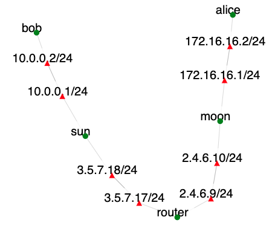

This exercise teaches installation, configuration, and testing of IPSec.
In this exercise we will work on the topology shown below:

Communicating endpoints alice and bob would like to communicate securely. Their gateways sun and moon will facilitate this by establishing an IPsec tunnel to encapsulate and encrypt traffic between their networks.
Our objective is to establish an IPSec tunnel between sun and moon. Before we do so we will establish what happens in absence of IPSec.
In this exercise bob runs anonymous FTP server and alice wants to access it. On router node, identify the interface with IP address 3.5.7.17 using ifconfig, e.g., ethX. Then run:
sudo tcpdump -i ethX -nn -s 0 -X
On alice type:
ftp bob
...enter "anonymous" as username
...enter any string as password
get README
bye
cat README
Now check the output of the tcpdump command on router. Did the router learn the contents of the README file?
Follow the instructions given at strogswan quickstart to set up IPSec. Be careful to replace the IP addresses in the example with the IP addresses we use in our topology.
Before you can fully complete the setup, you will need to generate and store some private and public keys and certificates. Follow the instructions at PKI quickstart to set up those. Make sure that you use the same strongswan private key on both sun and moon in the process. After you complete the setup run the tcpdump again on router and issue the same commands on alice as before. Can the router see the traffic now?